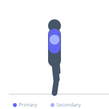

Exercise guide / Wall Angels
Wall Angels
Wall angels are a scapular mobility and postural correction exercise performed with the back flat against a wall. The exerciser slides their arms upward from shoulder height to overhead while maintaining full contact between the back, head, and arms against the wall. This exercise challenges thoracic extension, scapular upward rotation, and shoulder external rotation — all critical for overhead mobility and shoulder health.
Primary muscles
trapezius lower
pectoralis minor
Secondary muscles
infraspinatus
teres minor
trapezius middle
Equipment
No Equipment (Bodyweight)


Starting position
- Stand with your back against a flat wall. Press the entire back — including the lower back and head — against the wall. Raise arms to a goal-post position (elbows at 90 degrees, upper arms parallel to floor) with forearms and backs of hands touching the wall.
Setup
- No equipment needed. Stand against any flat wall. If the lower back cannot contact the wall, slightly bend the knees.
Steps
- Step 1: Begin in the goal-post position with head, back, elbows, forearms, and hands all in contact with the wall.
- Step 2: Slowly slide both arms upward along the wall, keeping the entire arm in contact with the surface.
- Step 3: Raise as high as possible while maintaining all contact points — stop if the lower back begins to arch away from the wall.
- Step 4: Slowly slide the arms back down to the starting goal-post position. Repeat.
Coaching cues
- Press the lower back into the wall throughout — do not let it arch
- Lead with the elbows as you slide up, not the hands
- Breathe out as you reach — relaxing the chest helps overhead mobility
Breathing
- Inhale to prepare, exhale as you slide the arms upward. Inhale as you return.
Range of motion
- Work only as high as wall contact can be maintained. The goal is eventually to reach full overhead extension with all contact points preserved.
Tempo
- 3-2-3-1 (3s slide up, 2s hold, 3s slide down, 1s reset)
Common mistakes
- Allowing the lower back to arch away from the wall during the upward slide
- Letting elbows or forearms lose contact with the wall by shrugging
- Forcing range that the thoracic spine does not currently allow
Safety
- This exercise reveals mobility deficits — work within the range that allows full wall contact
- If the head cannot contact the wall, place a small pillow behind the head to close the gap and work toward eliminating it over time
Training
- endurance: 8–15 reps
- mobility: 5–10 reps
- endurance: 2–3 sets
- mobility: 2–3 sets
- Rest: {'endurance': 45, 'mobility': 60}